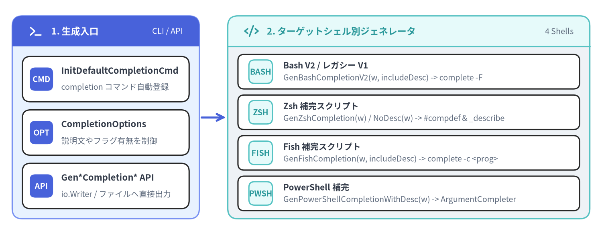
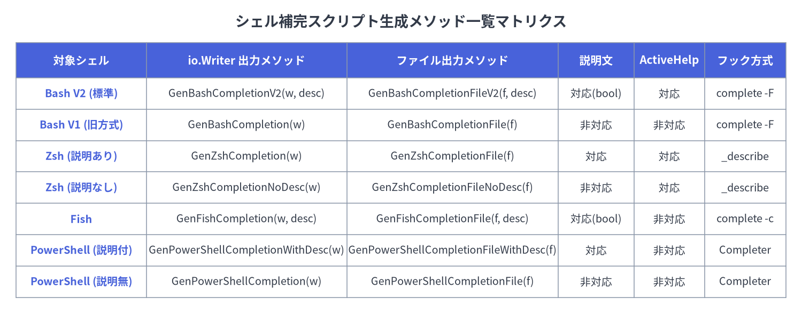

06. シェル補完スクリプト生成関数
Cobra は Bash（V2 およびレガシー V1）、Zsh、Fish、PowerShell の 4 大シェルに対応した自動補完スクリプト生成機能を標準搭載しています（completions.go、bash_completionsV2.go、bash_completions.go、zsh_completions.go、fish_completions.go、powershell_completions.go、shell_completions.go）。アプリケーションは組み込みの completion サブコマンド（InitDefaultCompletionCmd）を通じてユーザーにスクリプト生成機能を提供できるほか、リリースビルドやパッケージング工程でルート *cobra.Command の Gen*Completion* メソッドを直接呼び出して補完ファイルを出力することも可能です。

Source Code
from drawlib.canvas import save, setup
from drawlib.icons import phosphor
from drawlib.lines import line
from drawlib.smartarts import CardList, Panel
from drawlib.styles import Styles
setup(width=148, height=58, dpi=150)
# 1. Left Panel: Generator Entrypoints
p1 = Panel(
"1. 生成入口",
"CLI / API",
style=Styles.PrimaryNeutral,
header_style=Styles.PrimaryFlat,
text_style=Styles.WhiteBold.patch(text_size=11.0),
description_style=Styles.White.patch(text_size=9.5),
header_height=7.5,
icon=phosphor.terminal,
icon_style=Styles.WhiteBold,
)
p1.draw(xy=(3, 4), width=46, height=50)
ix1, iw1, ih1 = p1.get_content_box(xy=(3, 4), width=46, height=50, padding=(2.5, 2.5))
cl1 = CardList(
style=Styles.White,
text_style=Styles.DarkBold.patch(text_size=10.5),
description_style=Styles.Muted.patch(text_size=9.5),
badge_shape="rounded_rect",
badge_style=Styles.PrimaryFlat,
badge_text_style=Styles.WhiteBold.patch(text_size=9.5),
spacing=2.0,
)
cl1.add("InitDefaultCompletionCmd", "completion コマンド自動登録", badge_text="CMD")
cl1.add("CompletionOptions", "説明文やフラグ有無を制御", badge_text="OPT")
cl1.add("Gen*Completion* API", "io.Writer / ファイルへ直接出力", badge_text="API")
cl1.draw(xy=ix1, width=iw1, height=ih1)
line((49.5, 29), (55.5, 29), arrow_head="->", style=Styles.PrimaryBold)
# 2. Right Panel: 4 Shell Backends
p2 = Panel(
"2. ターゲットシェル別ジェネレータ",
"4 Shells",
style=Styles.Neutral,
header_style=Styles.SecondaryNeutral,
text_style=Styles.SecondaryBold.patch(text_size=11.0),
description_style=Styles.Muted.patch(text_size=9.5),
header_height=7.5,
icon=phosphor.code,
icon_style=Styles.SecondaryBold,
)
p2.draw(xy=(56, 4), width=89, height=50)
ix2, iw2, ih2 = p2.get_content_box(xy=(56, 4), width=89, height=50, padding=(2.5, 2.0))
cl2 = CardList(
style=Styles.White,
text_style=Styles.DarkBold.patch(text_size=10.0),
description_style=Styles.Muted.patch(text_size=9.5),
badge_shape="rounded_rect",
badge_style=Styles.SecondaryNeutral,
badge_text_style=Styles.SecondaryBold.patch(text_size=9.5),
direction="vertical",
spacing=1.5,
)
cl2.add("Bash V2 / レガシー V1", "GenBashCompletionV2(w, includeDesc) -> complete -F", badge_text="BASH")
cl2.add("Zsh 補完スクリプト", "GenZshCompletion(w) / NoDesc(w) -> #compdef & _describe", badge_text="ZSH")
cl2.add("Fish 補完スクリプト", "GenFishCompletion(w, includeDesc) -> complete -c <prog>", badge_text="FISH")
cl2.add("PowerShell 補完", "GenPowerShellCompletionWithDesc(w) -> ArgumentCompleter", badge_text="PWSH")
cl2.draw(xy=ix2, width=iw2, height=ih2)
save()
methodCommand.InitDefaultCompletionCmd & SetCompletionCommandGroupID#
ExecuteC() の実行時、Cobra はルートコマンドに対して c.InitDefaultCompletionCmd(args...) を自動的に呼び出し、completion bash、completion zsh、completion fish、completion powershell の 4 つのサブコマンドを持つデフォルトの completion コマンドを注入します。
Go シグネチャ#
// InitDefaultCompletionCmd adds a default 'completion' command to c.
// This function will do nothing if any of the following is true:
// 1- the feature has been explicitly disabled by the program,
// 2- c has no subcommands (to avoid creating one),
// 3- c already has a 'completion' command provided by the program.
func (c *Command) InitDefaultCompletionCmd(args ...string)
// SetCompletionCommandGroupID sets the group id of the completion command.
func (c *Command) SetCompletionCommandGroupID(groupID string)
自動登録のガード条件と内部マッピング#
- スキップ条件（ガード判定）: 以下のいずれかに該当する場合、
InitDefaultCompletionCmdは何も行わずにリターンします。c.CompletionOptions.DisableDefaultCmdがtrueに設定されている場合。cの子コマンド内に既にName() == "completion"またはエイリアス"completion"を持つコマンドが存在する場合。cに通常のサブコマンド（helpと__complete以外）が 1 つも存在せず、かつ今回の実行引数argsがcompletionの実行でも補完でもない場合（サブコマンドを持たない単一コマンド CLI が意図せずサブコマンド型に変化して位置引数を受け付けなくなるのを防ぐため）。
- 各サブコマンドが呼び出す生成メソッド:
completion bash→cmd.Root().GenBashCompletionV2(out, !noDesc)completion zsh→cmd.Root().GenZshCompletion(out)（--no-descriptions指定時はGenZshCompletionNoDesc(out)）completion fish→cmd.Root().GenFishCompletion(out, !noDesc)completion powershell→cmd.Root().GenPowerShellCompletionWithDesc(out)（--no-descriptions指定時はGenPowerShellCompletion(out)）
- コマンドグループの設定:
rootCmd.SetCompletionCommandGroupID("group-id")を呼び出すと、自動生成されるcompletionコマンドを--help出力内の指定したcobra.Groupに分類できます。
methodBash 補完ジェネレータ（V2 & レガシー V1）#
Cobra には 2 世代の Bash 補完ジェネレータが存在します。現在の標準であり completion bash でも使われている Bash V2（bash_completionsV2.go）と、従来の静的コード生成方式である レガシー Bash V1（bash_completions.go）です。
Go シグネチャ#
// GenBashCompletionV2 generates Bash completion file version 2
// and writes it to the passed writer.
func (c *Command) GenBashCompletionV2(w io.Writer, includeDesc bool) error
// GenBashCompletionFileV2 generates Bash completion version 2.
func (c *Command) GenBashCompletionFileV2(filename string, includeDesc bool) error
// GenBashCompletion generates bash completion file and writes to the passed writer.
func (c *Command) GenBashCompletion(w io.Writer) error
// GenBashCompletionFile generates bash completion file.
func (c *Command) GenBashCompletionFile(filename string) error
Bash V2 とレガシー V1 のアーキテクチャ比較#
| 比較項目 | Bash V2 (GenBashCompletionV2*) |
レガシー Bash V1 (GenBashCompletion*) |
|---|---|---|
| 実装ファイル | bash_completionsV2.go |
bash_completions.go |
| 基本設計 | すべての補完計算を <prog> __complete（または __completeNoDesc）へ委譲する軽量シェルスクリプト（約 425 行）。 |
全サブコマンド・フラグの配列定義（_<prog>_<subcmd>()）をシェルスクリプト内に静的展開するモノリシック方式。 |
| 補完説明文（Descriptions） | 対応（includeDesc = true でターミナル幅 $COLUMNS に合わせて 候補 (説明) を整列表示）。 |
非対応（\t 以降の説明文は切り捨てられます）。 |
| ActiveHelp 対応 | 対応（2 回目の <TAB> 押下 COMP_TYPE == 63 やメニュー補完 37/42 で表示）。 |
非対応（カスタム補完呼び出し時に <PROG>_ACTIVE_HELP=0 で強制無効化）。 |
BashCompletionFunction |
無視されます（Go 側の ValidArgsFunction / RegisterFlagCompletionFunc を使用）。 |
Command.BashCompletionFunction の生スクリプトや MarkFlagCustom（BashCompCustom）を展開。 |
bash-completion 依存 |
未導入環境（macOS デフォルトの Bash 3 等）でもフォールバック関数により動作。 | bash-completion パッケージの関数群に強く依存。 |
methodZsh 補完ジェネレータ#
zsh_completions.go で定義される Zsh ジェネレータは、#compdef <prog> ヘッダを持つ Zsh 補完スクリプトを生成し、<prog> __complete（または __completeNoDesc）の出力を Zsh 標準の _describe、_arguments、および compadd -x（ActiveHelp 表示用）へと橋渡しします。
Go シグネチャ#
// GenZshCompletion generates zsh completion file including descriptions
// and writes it to the passed writer.
func (c *Command) GenZshCompletion(w io.Writer) error
// GenZshCompletionFile generates zsh completion file including descriptions.
func (c *Command) GenZshCompletionFile(filename string) error
// GenZshCompletionNoDesc generates zsh completion file without descriptions
// and writes it to the passed writer.
func (c *Command) GenZshCompletionNoDesc(w io.Writer) error
// GenZshCompletionFileNoDesc generates zsh completion file without descriptions.
func (c *Command) GenZshCompletionFileNoDesc(filename string) error
[!IMPORTANT] メソッド名の語順に関する注意（
GenZshCompletionFileNoDesc）:zsh_completions.goにおける説明文なしのファイル出力メソッド名はGenZshCompletionFileNoDesc(filename string) error（Fileが先、NoDescが後）です。PowerShell 側のGenPowerShellCompletionFileWithDescとの類推などでGenZshCompletionNoDescFileと誤記されやすいため、Cobra v1.10.2 の正確なシンボル名であるGenZshCompletionFileNoDescを使用してください。
deprecated MarkZshCompPositionalArgumentFile & MarkZshCompPositionalArgumentWords#
// Deprecated: MarkZshCompPositionalArgumentFile only worked for zsh and its behavior was
// not consistent with Bash completion. It has therefore been disabled (no-op returning nil).
func (c *Command) MarkZshCompPositionalArgumentFile(argPosition int, patterns ...string) error
// Deprecated: MarkZshCompPositionalArgumentWords only worked for zsh. It has therefore
// been disabled (no-op returning nil).
func (c *Command) MarkZshCompPositionalArgumentWords(argPosition int, words ...string) error
- これら 2 つのメソッドは Zsh 専用であり他シェルとの一貫性を欠いていたため、Cobra v1.10.2 では**何も行わず常に
nilを返す no-op（非推奨）**となっています。 - 移行方法: 全シェル共通で動作する
ValidArgsFunctionを使用し、ファイル拡張子フィルタにはShellCompDirectiveFilterFileExt、位置ごとの単語候補にはlen(args)に応じたスライス返却を行ってください。
methodFish 補完ジェネレータ#
fish_completions.go で定義される Fish ジェネレータは、complete -c <prog> ルール群を登録し、1 回のタブ補完サイクルにつき 1 度だけ <prog> __complete（includeDesc == true）または <prog> __completeNoDesc（includeDesc == false）を実行して結果をグローバル変数 $__<prog>_perform_completion_once_result にキャッシュします。
Go シグネチャ#
// GenFishCompletion generates fish completion file and writes to the passed writer.
func (c *Command) GenFishCompletion(w io.Writer, includeDesc bool) error
// GenFishCompletionFile generates fish completion file.
func (c *Command) GenFishCompletionFile(filename string, includeDesc bool) error
Fish 固有の制御メカニズム#
- 順序保持（
ShellCompDirectiveKeepOrder）: 生成スクリプトは-kなしのcomplete -cと、complete -k -c（順序保持）の 2 つのルールを登録し、ディレクティブのビット演算(directive / 32) % 2 != 0に応じて動的に切り替えます。 - 単一候補時の
NoSpaceトリック: Fish は補完文字列が[@=/:.,]で終わらない限り自動的にスペースを挿入する仕様のため、ShellCompDirectiveNoSpaceが有効かつ一致候補が 1 件のみの場合、スクリプト側で$compと$comp.のダミー 2 候補を返すことでスペース挿入を抑止します。 - ActiveHelp の自動無効化: Fish は ActiveHelp 非対応のため、スクリプト内で自動的に
<PROG>_ACTIVE_HELP=0を付与して__completeを呼び出します。
methodPowerShell 補完ジェネレータ#
powershell_completions.go で定義される PowerShell ジェネレータは、Register-ArgumentCompleter -CommandName '<prog>' を用いて [scriptblock] を登録するスクリプトを生成します（PowerShell v5.0 以降が必要）。
Go シグネチャ#
// GenPowerShellCompletionWithDesc generates powershell completion file with descriptions
// and writes it to the passed writer.
func (c *Command) GenPowerShellCompletionWithDesc(w io.Writer) error
// GenPowerShellCompletionFileWithDesc generates powershell completion file with descriptions.
func (c *Command) GenPowerShellCompletionFileWithDesc(filename string) error
// GenPowerShellCompletion generates powershell completion file without descriptions
// and writes it to the passed writer.
func (c *Command) GenPowerShellCompletion(w io.Writer) error
// GenPowerShellCompletionFile generates powershell completion file without descriptions.
func (c *Command) GenPowerShellCompletionFile(filename string) error
PowerShell の 3 つの補完モードとバージョン互換処理#
PSReadLineキーハンドラモードへの自動適応: 生成スクリプトは(Get-PSReadLineKeyHandler | Where-Object {$_.Key -eq "Tab"}).Functionを調べ、以下の 3 モードすべてに最適な形式で候補を返します。Complete（Bash 風）: 複数候補がある場合は候補名 (説明)のようにスペースパディングで整列し、単一候補の場合は説明文を除去して展開します。MenuComplete（Zsh 風）:[System.Management.Automation.CompletionResult]::new(...)のToolTip引数に$comp.Descriptionを渡してメニュー下部にツールチップ表示します。TabCompleteNext（Windows 既定）:<TAB>を押すたびに次の候補へ順番に切り替えます。
- PowerShell 7.2 / 7.3+ の空引数エスケープ対応: 末尾スペース直後の空引数（
""と`"`"）の受け渡し仕様変更（PSNativeCommandArgumentPassing）をバージョン判定で自動吸収します。

Source Code
from drawlib.canvas import save, setup
from drawlib.smartarts import Table
from drawlib.styles import Colors, Styles
from drawlib.text import text
setup(width=148, height=58, dpi=150)
text(
(74, 54),
"シェル補完スクリプト生成メソッド一覧マトリクス",
style=Styles.DarkBold.patch(text_size=13.0),
)
tbl = Table(
cell_style=Styles.White,
text_style=Styles.Dark.patch(text_size=10.0),
header_cell_style=Styles.PrimaryFlat,
header_text_style=Styles.WhiteBold.patch(text_size=10.5),
border_style=Styles.MutedThin,
)
rows = [
["対象シェル", "io.Writer 出力メソッド", "ファイル出力メソッド", "説明文", "ActiveHelp", "フック方式"],
["Bash V2 (標準)", "GenBashCompletionV2(w, desc)", "GenBashCompletionFileV2(f, desc)", "対応(bool)", "対応", "complete -F"],
["Bash V1 (旧方式)", "GenBashCompletion(w)", "GenBashCompletionFile(f)", "非対応", "非対応", "complete -F"],
["Zsh (説明あり)", "GenZshCompletion(w)", "GenZshCompletionFile(f)", "対応", "対応", "_describe"],
["Zsh (説明なし)", "GenZshCompletionNoDesc(w)", "GenZshCompletionFileNoDesc(f)", "非対応", "対応", "_describe"],
["Fish", "GenFishCompletion(w, desc)", "GenFishCompletionFile(f, desc)", "対応(bool)", "非対応", "complete -c"],
["PowerShell (説明付)", "GenPowerShellCompletionWithDesc(w)", "GenPowerShellCompletionFileWithDesc(f)", "対応", "非対応", "Completer"],
["PowerShell (説明無)", "GenPowerShellCompletion(w)", "GenPowerShellCompletionFile(f)", "非対応", "非対応", "Completer"],
]
tbl.set_style_cell_evenodd(
even_color=Colors.Light,
even_text_style=Styles.Dark.patch(text_size=9.5),
odd_color=Colors.White,
odd_text_style=Styles.Dark.patch(text_size=9.5),
)
tbl.set_style_cell_header(
background_color=Colors.Primary,
text_style=Styles.WhiteBold.patch(text_size=10.0),
)
tbl.set_style_cell(
background_color=Colors.Light,
text_style=Styles.PrimaryBold.patch(text_size=9.5),
rows=[1, 2, 3, 4, 5, 6, 7],
columns=[0],
)
tbl.draw_flexible(
xy=(3, 50),
column_widths=[24, 37, 39, 14, 13, 15],
row_heights=[6.5, 5.8, 5.8, 5.8, 5.8, 5.8, 5.8, 5.8],
data=rows,
align="top_left",
)
save()
func宣言的フラグ補完ヘルパー（shell_completions.go）#
動的な RegisterFlagCompletionFunc に加え、shell_completions.go および bash_completions.go ではフラグにアノテーションを付与して補完挙動を制御する宣言的ヘルパー関数と定数がエクスポートされています。
Go シグネチャとアノテーション定数#
// Annotations for Bash and cross-shell completion (bash_completions.go)
const (
BashCompFilenameExt = "cobra_annotation_bash_completion_filename_extensions"
BashCompCustom = "cobra_annotation_bash_completion_custom"
BashCompOneRequiredFlag = "cobra_annotation_bash_completion_one_required_flag"
BashCompSubdirsInDir = "cobra_annotation_bash_completion_subdirs_in_dir"
)
// Command methods & package-level FlagSet functions (shell_completions.go)
func (c *Command) MarkFlagRequired(name string) error
func (c *Command) MarkPersistentFlagRequired(name string) error
func MarkFlagRequired(flags *pflag.FlagSet, name string) error
func (c *Command) MarkFlagFilename(name string, extensions ...string) error
func (c *Command) MarkPersistentFlagFilename(name string, extensions ...string) error
func MarkFlagFilename(flags *pflag.FlagSet, name string, extensions ...string) error
func (c *Command) MarkFlagDirname(name string) error
func (c *Command) MarkPersistentFlagDirname(name string) error
func MarkFlagDirname(flags *pflag.FlagSet, name string) error
func (c *Command) MarkFlagCustom(name string, f string) error
func MarkFlagCustom(flags *pflag.FlagSet, name string, f string) error
カスタム completion サブコマンドの実装例#
InitDefaultCompletionCmd を使わずに独自のフラグやヘルプ文言を持つ completion サブコマンドを定義する場合も、各 Gen*Completion* メソッドを直接呼び出すだけで実装できます。
package main
import (
"os"
"github.com/spf13/cobra"
)
func newCustomCompletionCmd() *cobra.Command {
return &cobra.Command{
Use: "completion [bash|zsh|fish|powershell]",
Short: "指定したシェル向けの自動補完スクリプトを生成します",
ValidArgs: []cobra.Completion{"bash", "zsh", "fish", "powershell"},
Args: cobra.MatchAll(cobra.ExactArgs(1), cobra.OnlyValidArgs),
RunE: func(cmd *cobra.Command, args []string) error {
root := cmd.Root()
out := cmd.OutOrStdout()
switch args[0] {
case "bash":
return root.GenBashCompletionV2(out, true)
case "zsh":
return root.GenZshCompletion(out)
case "fish":
return root.GenFishCompletion(out, true)
case "powershell":
return root.GenPowerShellCompletionWithDesc(out)
default:
return os.ErrInvalid
}
},
}
}
関連リファレンス#
- 05. 動的シェル補完・ディレクティブ・ActiveHelp —
CompletionFunc、ShellCompDirective、RegisterFlagCompletionFunc、AppendActiveHelpの詳細。 - 03. フラグ・FlagSet・フラググループ制約 — フラグアノテーションと必須・排他フラググループ。
- 08. ドキュメント自動生成 (
cobra/doc) — リリースビルド時に補完スクリプトと併せて Markdown / Man / ReST / YAML リファレンスを生成する方法。